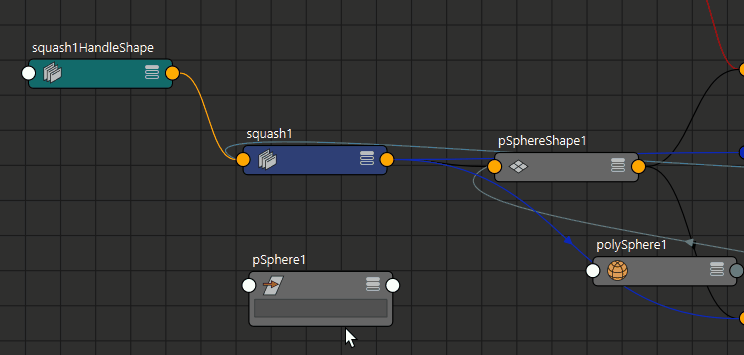

- 融合变形(Blend Shape)
- 在选定对象或组上创建融合形变变形器。
若要打开并更改融合变形选项，请选择“变形 > 融合变形”(Deform > Blend Shape) >
 。
。
- 簇(Cluster)
- 创建簇变形器。
若要打开并更改簇选项，请选择“变形 > 簇”(Deform > Cluster) >
。
另请参见创建簇变形器。
- 创建曲线扭曲变形器。
- 另请参见曲线扭曲选项。
- Delta Mush
- 创建 Delta Mush 变形器。
若要打开并更改 Delta Mush 选项，请选择“变形 > Delta Mush”(Deform > Delta Mush) >
。
-
另请参见创建 Delta Mush 变形器。
- ML 变形器(ML Deformer)
- 创建机器学习 (ML) 变形器，用于使用训练数据创建复杂的变形系统版本。
-
若要打开并更改 ML 变形器选项(ML Deformer Options)，请选择“变形 > ML 变形器”(Deform > ML Deformer) >。
注： “ML 变形器选项”(ML Deformer Options)仅包含基本变形器设置。有关特定于 ML 变形器的选项，请参见“属性编辑器”(Attribute Editor)中的“ML 变形器”(ML Deformer)选项卡。
- 另请参见创建 ML 变形器和使用单独的目标几何体创建 ML 变形器。
- 张力(Tension)
- 创建张力变形器。
若要打开并更改张力选项，请选择“变形 > 张力”(Deform > Tension) >
。
- 另请参见创建张力变形器。
- 固化(Solidify)
- 创建固化变形器，该变形器将使几何体各截面的外观变得更坚实、拉伸更少。
若要打开并更改固化选项，请选择“变形 > 固化”(Deform > Solidify) >
。
-
另请参见创建固化变形器。
- 晶格(Lattice)
- 创建晶格变形器。
若要打开并更改晶格选项，请选择“变形 > 晶格”(Deform > Lattice) >
。
另请参见创建晶格变形器。
- 接近度包裹(Proximity Wrap)
- 创建接近度包裹变形器。
若要打开并更改接近度包裹变形器选项，请选择“变形 > 接近度包裹”(Deform > Proximity Wrap) >
。
另请参见创建接近度包裹变形器和绘制接近度包裹权重工具(Paint Proximity Wrap Weights Tool)。
- 包裹(Wrap)
- 创建包裹变形器。
若要打开并更改包裹选项，请选择“变形 > 包裹”(Deform > Wrap) >
。
另请参见创建包裹变形器。
- 收缩包裹(ShrinkWrap)
- 创建收缩包裹变形器。
若要打开并更改收缩包裹选项，请选择“变形 > 收缩包裹”(Deform > Shrinkwrap) >
。
另请参见收缩包裹变形器。
- 变形(Morph)
- 创建变形变形器，该变形器可创建对目标进行变形的变形器。
若要打开并更改变形选项，请选择“变形 > 变形”(Deform > Morph) >
。
另请参见创建变形变形器。
- 线条(Wire)
- 创建线条变形器。
若要打开并更改线条工具选项，请选择“变形 > 线条”(Deform > Wire) >
。
另请参见设置线条变形器。
- 褶皱(Wrinkle)
- 创建褶皱变形器。
若要打开并更改褶皱工具选项，请选择“变形 > 褶皱”(Deform > Wrinkle) >
。
另请参见创建褶皱变形器。
- 姿势空间变形(Pose Space Deformation)
- 创建姿势空间变形。选择“姿势空间变形”(Pose Space Deformation)卷展栏以选择“创建姿势插值器”(Create Pose Interpolator)选项，或打开“姿势编辑器”(Pose Editor)。
-
- 创建姿势插值器选项(Create Pose Interpolator options)
- “创建姿势插值器选项”(Create Pose Interpolator options)窗口包含两个选项：
选项 功能 添加中性姿势(Add Neutral Poses) “添加中性姿势”(Add Neutral Poses)将使用当前关节方向为选定姿势插值器 (PI) 节点创建三个中性姿势：neutral、neutralSwing 和 neutralTwist。有关详细信息，请参见将控制器驱动关节用于姿势空间变形。 驱动者扭曲轴(Driver Twist Axis) 若要正确计算驱动者关节扭曲，姿势插值器节点需要知道哪个轴被定义为扭曲轴：X、Y 或 Z。默认情况下是 X 轴。
- 肌肉(Muscle)
- 创建肌肉变形器。
若要打开“肌肉”(Muscle)菜单，请选择“变形 > 肌肉”(Deform > Muscle) >
。
- 非线性(Nonlinear)
- 创建非线性变形器。
若要打开“非线性”(Nonlinear)菜单，请选择“变形 > 非线性”(Deform > Nonlinear) >以创建以下变形：
另请参见创建非线性变形器。
- 软修改工具(Soft Modification)
- 创建软修改变形器。
若要打开并更改软修改选项，请选择“变形 > 软修改”(Deform > Soft Modification) >
。
另请参见使用软修改工具。
- 雕刻(Sculpt)
- 创建雕刻变形器。
若要打开雕刻选项，请选择“变形 > 雕刻”(Deform > Sculpt) >
。
另请参见创建雕刻变形器。
- 纹理(Texture)
- 创建纹理变形器。
若要打开纹理选项，请选择“变形 > 纹理”(Deform > Texture) >
。
另请参见创建纹理变形器。
- 抖动(Jiggle)
- 创建抖动变形器。
-
另请参见创建抖动变形器。
- 曲线上的点(Point On Curve)
- 创建曲线上的点变形器。
若要打开曲线上的点选项，请选择“变形 > 曲线上的点”(Deform > Point on Curve) >
。
另请参见创建曲线上的点变形器。
- 添加调整(Add Tweak)
-

- 向几何体添加调整节点（如果尚未指定）。使用组件标记时，不会自动创建调整节点。
注： 如果“变形”(Deform)菜单中未启用“添加调整”(Add Tweak)选项，请确保在节点编辑器(Node Editor)或属性编辑器(Attribute Editor)中选择已应用变形器的形状节点。
编辑(Edit)
- 融合变形(Blend Shape)
- 选择以打开“融合变形”(Blend Shape)卷展栏，从中可以选择：
- 有关融合形变变形的常规信息，请参见形变创作和创建融合形变变形器。
- 晶格(Lattice)
- 选择以打开“晶格”(Lattice)卷展栏，从中可以选择：
- 移除晶格调整(Remove Lattice Tweaks)
- 如果要更改已移动了点的晶格的分段数量，请选择“移除晶格调整”(Remove Lattice Tweaks)，然后更改晶格的分段。如果要更改具有历史信息的晶格的分段，请找到输入晶格的形状并更改其分段。通过选择输入晶格并查看原始晶格形状的属性编辑器选项卡，可找到输入晶格，输入晶格通常使用相同的基础名称，并在末尾附加“Orig”作为输出晶格。
- 重置晶格(Reset Lattice)
- 重置晶格。但是，如果已从晶格点重置位置移动该晶格点或晶格具有历史，将无法更改该晶格的分辨率。
-
另请参见编辑晶格变形器。
- 包裹(Wrap)
- 选择以打开“包裹”(Wrap)卷展栏，从中可以选择：
-
- 添加影响(Add Influence)
- 将选定对象添加为指定包裹变形的新影响物。
- 移除影响物(Remove Influence)
- 从指定的包裹变形中移除选定影响对象。
- 另请参见编辑包裹变形器。
- 收缩包裹(ShrinkWrap)
- 选择以打开“收缩包裹”(ShrinkWrap)卷展栏，从中可以选择：
-
- 添加曲面(Add Surfaces)
- 将 NURBs 曲面添加到现有的变形器。
- 移除内部对象(Remove Inner Object)
- 移除内部对象与包裹器对象之间的连接，而不删除收缩包裹节点。移除内部对象后，它将不再影响包裹器对象。
- 移除曲面(Remove Surfaces)
- 从现有的变形器中移除 NURBs 曲面。
- 移除目标(Remove Target)
- 移除目标对象与包裹器对象之间的连接，而不删除收缩包裹节点。移除目标后，它将不再影响包裹器对象。
- 设定内部对象(Set Inner Object)
- 用于在场景中创建收缩包裹变形器后，重置内部对象。
- 设定目标(Set Target)
- 用于在场景中创建收缩包裹变形器后，重置目标对象。
- 线条(Wire)
- 选择以打开“线条”(Wire)卷展栏，从中可以选择：
-
另请参见编辑线条变形器。
中间对象
权重(Weights)
您可以绘制变形器权重以获得精细结果。
- 绘制权重(Paint Weights)
- 选择以打开“绘制权重”(Paint Weights)卷展栏，从中可以选择：
-
- 融合变形(Blend Shape)
- 打开绘制融合变形权重工具选项。
- 簇(Cluster)
- 打开绘制簇权重工具选项。
- Delta Mush
- 打开绘制 Delta Mush 权重工具选项。
- 张力(Tension)
- 打开绘制属性工具选项。
- 接近度包裹(Proximity Wrap)
- 打开绘制属性工具选项。
- 晶格(Lattice)
- 打开绘制属性工具选项。
- 收缩包裹(ShrinkWrap)
- 打开绘制收缩包裹权重工具选项。
- 线条(Wire)
- 打开绘制线权重工具选项。
- 非线性(Nonlinear)
-
打开绘制属性工具选项。
- 抖动(Jiggle)
- 打开绘制抖动权重工具选项。
- 纹理变形器(Texture Deformer)
- 打开绘制纹理变形器权重工具选项。
- 镜像变形器权重(Mirror Deformer Weights)
- 镜像变形器权重。
选择“变形 > (编辑)镜像变形器权重”(Deform > (Edit) Mirror Deformer Weights) >
以打开镜像变形器权重选项。
请参见镜像变形器权重。
- 导出权重(Export Weights)
-
打开“导出变形器权重选项”(Export Deformer Weights Options)，您可以在其中设置将变形器权重导出为 XML 或 JSON 文件的选项。
-
- 现有节点(Existing nodes)
-
允许从场景中变形器节点的下拉列表中选择。
- 文件格式(File Format)
-
可用于采用 XML 或 JSON 文件格式保存权重。
- 文件名(File name)
-
输入权重贴图的文件名。默认情况下，权重贴图将保存到当前项目的目录中。单击文件夹图标可浏览到其他目录。
- 另请参见导出和导入变形器权重。
- 导入权重(Import Weights)
- 打开“导入变形器权重选项”(Import Deformer Weights Options)，您可以在其中选择包含要导入的变形器权重贴图的文件。
-
- 变形器节点(Deformer node)
-
允许您输入要导入权重的节点名称。也可以从“现有节点”(Existing nodes)列表中选择节点。
- 现有节点(Existing nodes)
-
从场景的变形器节点下拉列表中选择。
- 文件名(File name)
-
输入要导入的 XML 文件名称，或单击文件夹图标以浏览并选择一个文件。
- 映射方法(Mapping Method)
-
该下拉菜单允许您从以下选项中选择：
-
- 索引(Index)
- 使用从 XML 文件导入的值替换蒙皮对象上的当前值，仅覆盖网格和导入权重文件之间匹配顶点的值（例如，网格上的 vertex1 与导入 XML 文件中的 vertex1。）
- 如果希望导入依赖于变形器中的顶点索引，选择该选项。这对于获得形状节点和变形器之间的精确匹配非常有用。
- 过采样(Over)
- 使用从 XML 文件中导入的值替换蒙皮对象上的当前值，覆盖权重的任何默认值。
- 最近点(Nearest)
- 如果希望 Maya 基于点在权重贴图中的相似性来确定哪个点获得哪个权重，选择该选项。当索引编号已更改，但拓扑非常相似或精确时，这会非常有用。
- 忽略名称(Ignore names)
- 启用后，Maya 会在尝试导入权重时忽略变形器节点的名称。
- 归一化权重(Normalize Weights)
- 启用此选项（默认情况下）时，Maya 会完成额外的归一化过程，同时导入权重值，以防止锯齿瑕疵出现在目标网格上。在某些情况下，这些瑕疵会在导出时返回权重值后出现。
- 变形器集(旧版)(Deformer Sets (Legacy))
-
- 编辑成员身份工具(Edit Membership Tool)
-
通过使用“编辑成员身份工具”(Edit Membership Tool)选择可变形对象点，可以直接编辑变形器集成员身份。
请参见编辑变形器集成员身份和绘制集成员身份工具。
- 删减成员身份(Prune Membership)
- 打开“删减成员身份”(Prune Membership)菜单。
- 可以根据变形器影响的点从变形器集中移除不受影响的点。使用该选项可以避免对不受变形影响的点进行不必要的计算。“删减成员身份”(Prune Membership)仅可用于“簇”(Cluster)、“晶格”(Lattice)、“雕刻”(Sculpt)和“线条”(Wire)变形器
- 删减操作仅考虑每个组件在受指定变形所响的几何体的非变形版本和变形版本中的当前位置。如果已经对变形的属性设置动画，则删减操作仅根据当前的属性值执行。这意味着，如果在动画的其他帧可能受影响的组件在当前帧中不受影响，则可能会将删减这些组件。
- 由于一些目标形状的典型融合变形操作的权重在任意时间点都为 0.0，因此在将该操作应用于融合变形时，会特别危险。出于此原因，没有提供用于删减融合形变变形器的成员身份的菜单项。不过，可以通过命令行删减融合形变变形器的成员身份。
-
请参见：
- 删减簇变形器集成员身份
- 删减晶格变形器集成员身份
- 编辑雕刻变形效果主题中的删减雕刻变形器集
- 编辑线条变形器主题中的删减线条变形器集
- 绘制成员身份(Paint Membership)
- 选择“绘制成员身份”(Paint Membership) > ，以打开绘制集成员身份工具(Paint Set Membership Tool)。另请参见绘制变形器集成员身份